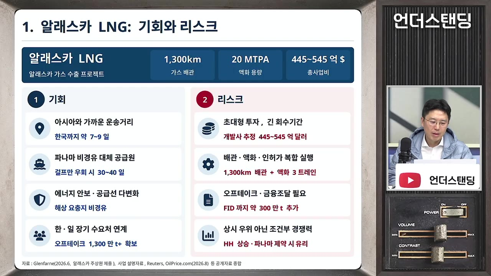
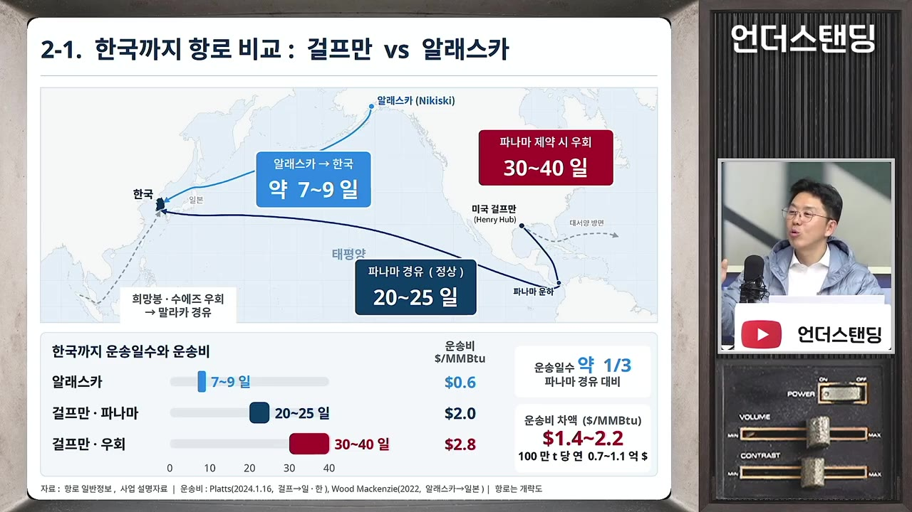
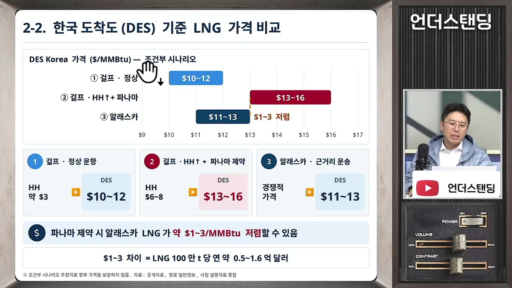
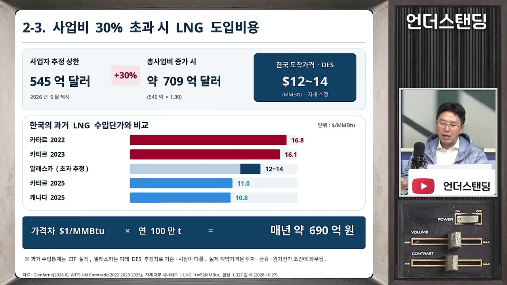
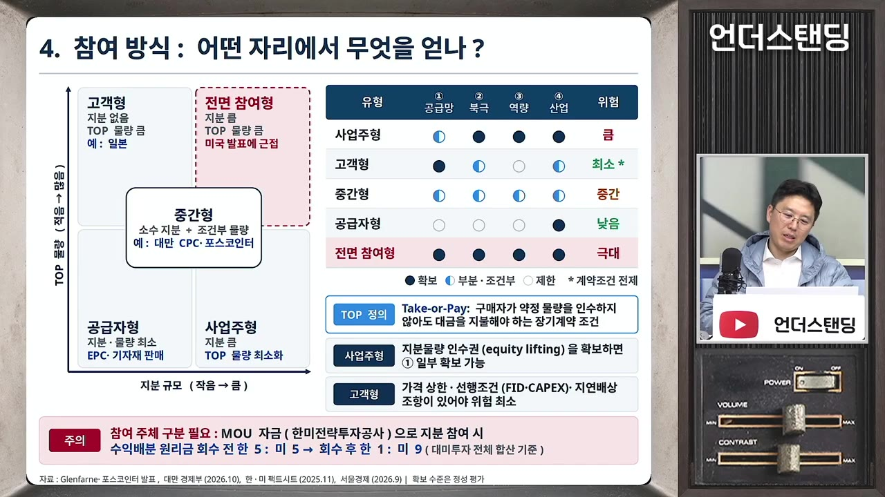

알래스카 LNG 청구서에 당황한 한국, 뒤에서 조용히 웃는 일본. 위기인가 기회인가 (COR에너지인사이트 권효재 대표)
▶ 원본 영상 보기한눈에 보기
- 권효재 대표는 알래스카 LNG를 미국의 '선거용 허풍'으로 보지 않습니다. 북극에서 중국·러시아를 견제하려는 미국의 초당적 안보 사업이라는 것이 그의 진단입니다.
- 사업비가 사업자 상한보다 30% 늘어난 709억 달러가 되어도 한국 도착 LNG 가격은 MMBtu(가스 열량 단위)당 12~14달러라고 그는 계산합니다. 현재 현물 31~32달러, 2022~23년 카타르산 16~17달러보다 낮은 수준입니다.
- 호르무즈 해협 봉쇄, 사우디 불안, 파나마 운하 병목 속에서 알래스카산은 '안전 프리미엄'(MMBtu당 2~3달러)을 붙일 만한 공급원이라는 주장입니다.
- 한국이 쓸 수 있는 협상안도 제시합니다. 지분 투자 없이 400만 톤을 구매하되 가격 상한(예: 14달러)을 두고, 그 이상의 사업비 초과는 사업주가 책임지게 하는 방식입니다.
- 가장 큰 문제는 준비 부족이라고 지적합니다. 일본은 이미 컨설팅사를 동원해 사업비를 분석하고 있지만, 한국에는 예산을 들여 정밀 검토하는 주체가 없습니다.
이런 분께 도움이 됩니다
- 알래스카 LNG 뉴스를 "돈만 뜯기는 사업"으로만 접했고, 반대쪽 논리와 구체적 숫자를 알고 싶은 분
- LNG 가격 구조, 호르무즈·파나마 같은 해상 병목, 에너지 안보 문제를 한 번에 정리하고 싶은 분
- 한국과 일본의 해외 자원 개발 방식 차이가 궁금한 분
핵심 내용
결론: 할지 말지보다 '제대로 따져볼 준비'가 문제
- 권 대표는 이 사업을 하자는 쪽이 아닙니다. 할지 말지를 진지하게 살필 가치가 있는데 아무도 제대로 살피지 않고 있다는 점을 문제로 봅니다. (1:08:39)
- 버티다가 미국에서 안보·관세 관련 '폭탄 청구서'가 날아온 뒤에 부랴부랴 대응하면 한국만 손해라고 말합니다.
- 결론적으로 예산을 편성해 사람을 동원하고 협상을 준비하는 일만큼은 초당적으로 지지해 달라고 요청합니다. (1:19:21)
- 사업 최종 투자 결정(FID)은 올해 말, 늦어도 내년 상반기로 미국 측이 계속 언급하고 있다고 합니다.
💡 "들어보지도 않고 안 된다"도, "미국이 시키니까 한다"도 모두 무책임하다는 것이 영상의 핵심 메시지입니다.
알래스카가 겪는 에너지 위기
- 알래스카 인구는 약 70만 명이고 줄어드는 중입니다. 그중 약 70%가 남쪽의 거의 얼지 않는 항구 도시 앵커리지 주변에 삽니다.
- 남쪽 가스전은 50년 동안 쓰다가 거의 고갈됐습니다. 지난 약 10년간 대체 가스를 찾으려는 시추도 모두 실패했습니다.
- 권 대표는 이를 '자원의 저주'로 설명합니다. 자국에서 나는 값싼 가스에 익숙해지면 효율 개선을 게을리하게 되고, 에너지값이 오르면 산업이 무너진다는 것입니다. 유럽도 같은 일을 겪었고, 그는 "전 세계 99%가 같은 패턴"이라고 봅니다.
- 이번 겨울에는 알래스카 가스가 바닥날 것으로 공급사가 계산했다고 합니다. 대응책은 다음과 같습니다. (9:13)
- 남쪽: 비싼 LNG를 일부 수입
- 북쪽 대형 가스전 옆: 소규모 LNG 설비를 설치한 뒤 특수 탱크로리로 눈길 약 600km를 달려 중부에 공급
- 이 가스 가격은 한국 도입가의 약 2배입니다. 원래 쓰려던 경유는 값이 폭등해 한국 난방비의 약 4배 수준이 된다고 합니다.
- 주민들의 불만이 크다고 전합니다. 한국 언론 취재에 "알래스카 LNG 얘기 들은 지 15년째다, 안 믿는다"고 답했다고 합니다.
- 다음 주 중간선거가 있습니다. 미국 상원은 인구와 상관없이 주마다 2명이라 알래스카 상원의원·주지사 자리는 공화당에 중요합니다.
북극 패권 경쟁의 최전선
- 권 대표는 알래스카를 "미국·러시아·중국 패권 경쟁의 최전선"으로 봅니다. 폐허를 재건하는 우크라이나와는 성격이 다르다는 설명입니다. (15:38)
- 알래스카 최서단 섬과 러시아 최동단 사이의 바다 국경 간격은 약 4km이고, 겨울에는 바다가 언다고 합니다.
- 북극에 접하지도 않은 중국이 쇄빙선단을 대량 건조해 알래스카 북쪽 바다에서 탐사 중이라고 합니다.
- 트럼프-푸틴 회담 장소가 알래스카였던 것은 군사력 과시였다는 해석입니다.
- 스텔스 전투기 100대 이상이 모인 공군기지는 전 세계에서 알래스카가 유일하다고 합니다. 두 번째 거점은 그린란드입니다.
- 북반구 미사일 교전은 북극을 경유하므로 미국은 북쪽을 막아야 합니다.
- 북극 방어가 중요하다는 데는 미국 정치권의 초당적 합의가 있다는 것이 권 대표의 판단입니다. 트럼프 1기에 시작해 바이든 행정부 말기에 정리됐다고 합니다. (18:20)
- 장기 흐름은 임기 6년이고 3분의 1씩 교체되는 상원이 좌우한다고 설명합니다.
- 상원의 논리는 이렇습니다. 북극 방어 → 해군 전력(특히 쇄빙선) → 조선업 부활. 한국에 별도로 요청한 조선 투자도 이 연장선에 있다고 봅니다. 금액은 자막상 불분명합니다.
- 인구와 인프라 자체가 안보입니다. 군부대를 키우려면 가족이 살 기반이 필요하기 때문입니다.
- 미국은 이미 북쪽 놈(Nome, 자막은 '노이') 항구를 증설 중이라고 합니다. 군사 인프라를 민간용으로도 쓰면서 비용을 회수하려는 데 LNG 사업이 유용하다는 설명입니다.
- 러시아도 시베리아 LNG 개발과 함께 항구를 만들고 해안경비대·해군을 주둔시켰다고 합니다.
- 연방정부 재정도 넉넉하지 않아 동맹국에 도움을 요청하는 구조입니다. 권 대표는 이를 "형님이 도와달라는 것"이라고 표현합니다.
💡 선거가 끝나도 사업 압박은 사라지지 않을 수 있습니다. 이 사업의 뿌리가 선거가 아니라 북극 안보이기 때문입니다.
사업 경과와 한국 정부 대응
- 논의 시작
- 구체화와 무산
- 트럼프 첫 언급
- 주기적 언급
- 500억 달러 발언
- 팩트시트
- 검토 시작
- 최종 투자 결정
- 1논의 시작
북부 가스를 남쪽으로 끌어오자는 논의가 약 20년 전부터 있었음
- 2구체화와 무산
2012년부터 사업이 구체적으로 거론됐으나, 유가 폭락과 셰일가스 등장으로 여러 번 흐지부지됨
- 3트럼프 첫 언급
2024년 12월 20일 처음 언급, 취임식에서도 거론 (1:13:38)
- 4주기적 언급
2025년 3월부터 반복 언급됐고, 이후 잠잠하다가 지난달부터 다시 강하게 거론됨
- 5500억 달러 발언
9월 말 미국이 "한국이 사업비 500억 달러를 부담하기로 했다"고 발언했고, 김정관 장관이 "합의한 적 없다"고 반박 (11:28)
- 6팩트시트
10월 양국 팩트시트에 "한국이 검토해 상업적 합리성이 확인되면 진행"으로 명시
- 7검토 시작
이번 달 초에야 한국이 검토를 시작했다고 함
- 8최종 투자 결정
올해 말 또는 내년 상반기 예정
- 한국 법상 투자하려면 상업적 합리성이 확인돼야 합니다. 그렇지 않으면 국회 보고와 상임위의 특별한 판단을 거쳐야 하는 장치가 있다고 합니다.
- 미국 입장에서 보면 첫 언급 후 약 1년 10개월 만에 "검토 시작"이라는 답이 "너무하다"로 느껴질 수 있다고 지적합니다.
- 그 사이 "한미 관계가 사상 최대 위기다", "주요 인사 비자가 안 나온다" 같은 말이 10월에 줄줄이 나왔습니다. 권 대표는 "아니 땐 굴뚝에 연기가 날까"라며 타이밍이 절묘하다고 봅니다.
중동 리스크: 호르무즈와 사우디
- 작년 방송에서는 가능성 0.01%라며 말하지 않았던 '호르무즈 봉쇄'가 현실이 됐다고 말합니다. (28:52)
- 한국은 수입 화석연료 의존도가 80%, 대만은 90%입니다. 세계 반도체를 공급하는 두 나라가 중동 석유에 매달린 "희한한 구조"라는 지적입니다.
- 권 대표는 미국이 중동에서 손을 빼는 흐름으로 봅니다.
- 1990년 걸프전 때는 미국이 다국적군 약 50만 명을 모아 두 달 만에 끝냈습니다. 지금은 폭탄만 쏘고 지상군은 보내지 않는다고 합니다.
- 미국 쪽 논리는 "석유가 그렇게 중요하면 우리 걸 사든지 네 해군으로 호위해라"입니다.
- 그는 미국이 3~4년 뒤 정제 설비가 보강되면 중동에서 더 발을 뺄 것으로 봅니다. 중동이 어려우면 경쟁자 중국이 더 힘들고, 미국은 에너지를 팔아 무역적자를 줄일 수 있기 때문입니다. 중동은 대리 국가(1순위 이스라엘)에 맡기는 구도가 된다는 전망입니다.
- 사우디가 더 큰 위험이라고 말합니다. (31:11)
- 실권자가 왕세자인 절대왕정이고, 후티와의 전쟁에서 수도·공항·유전·송유관 펌프장까지 미사일 공격을 막지 못하고 있다고 합니다.
- 호르무즈 봉쇄는 "석유는 있는데 못 나오는 것"이지만, 사우디 문제는 생산 자체가 멈추는 것입니다.
- 일각에서는 사우디가 위기에 빠지면 유가가 300달러까지 갈 수 있다고 본다고 소개합니다. 디젤 트랙터나 오지 보일러처럼 대체가 안 되는 수요가 있기 때문입니다.
- 미국 석유를 더 사 오는 것도 단기간에는 어렵다는 설명입니다.
- 미국은 이미 원유·석유제품 수출을 최대치 이상으로 하고 있다고 합니다.
- 서부 해안(캘리포니아)에는 석유·가스 수출 시설을 지을 수 없다는 것이 미국 에너지업계가 15년 전에 내린 결론이라고 합니다. 바람이 많은 샌프란시스코에도 미관 때문에 풍력발전기가 하나도 없다는 예를 듭니다.
- 서부 캐나다는 밴쿠버에서 차로 2시간만 가도 원시림이라 LNG·석유 터미널 공사가 거의 진척되지 않는다고 합니다.
- 멕시코만에서 출발하면 파나마 운하가 꽉 차 있습니다. 희망봉으로 돌면 운반선이 2배 필요한데 배가 없습니다.
- 배, 터미널, 파이프라인을 새로 갖추는 데는 최소 10년이 걸린다고 합니다.
- 올해 9월부터 시행 중인 법에 따라 주요 에너지 자원은 한 나라에 대한 의존도를 30% 미만으로 낮춰야 한다고 합니다. 권 대표는 이를 옳은 방향으로 평가합니다.

다른 공급원은 어떤가
| 공급원 | 영상 속 평가 |
|---|---|
| 호주·미국·캐나다 | 자원이 풍부하고 해상 조달 이슈가 적은 세 나라. 한국도 이미 들여오고 있음 |
| 동남아 | 자국 자원이 고갈되는 중이라 장기 대책이 못 됨 |
| 중동 | 지정학 리스크가 계속됨 |
| 러시아(사할린) | 가깝고, 예전 계약이라 쌈. 다만 지정학 갈등이 깊어지면 금융 제재 위험이 있음 |
| 미국 본토(멕시코만) | 평시 10~12달러. 여러 나라가 몰리면 13~16달러로 오르고 파나마 병목도 있음 |
- 한국은 약 15년간 사할린 LNG를 들여왔습니다. 유럽연합(EU)은 회원국에 올가을부터 러시아 LNG 장기 도입을 하지 말라고 했다고 합니다. (44:55)
- 권 대표는 이를 "재미로 하는 얘기"라고 전제하고 말합니다. 한국이 EU에 무기를 팔고 싶다고 하면서 러시아에 경유를 팔고 LNG를 사 오자 유럽이 화가 났고, 최근 한국산 무기의 유럽 수출이 잘 안 된다는 것입니다.
- 지금 세계는 경제 논리만으로 돌아가는 영역이 거의 남지 않았다고 봅니다. 방산, 에너지, 반도체 모두 지정학과 묶여 있다는 것입니다.
가격으로 따져보기
- 시장 상황(MMBtu당 가격): (40:21)
- 작년 이맘때 8~9달러였는데, 지금 현물 시장에서 사면 32달러라고 합니다(뒤에서는 31달러로 언급).
- 비관론자들은 1월 말 60달러(약 6배)까지 예상한다고 합니다.
- 올해는 비축분을 끌어다 썼기 때문에 내년에는 무조건 채워야 합니다. 그런데 호르무즈가 내년에도 막혀 있으면 가격이 더 오를 수 있다고 봅니다.
- 같은 시기에 장기계약이나 자기 지분 가스를 가진 사업자는 5~6달러에 가져와서 남는 물량을 30달러에 판다고 합니다.
- 미국산 경로별 비교: (42:12)
- 미국 본토(멕시코만)에서 정상 조건으로 오면 한국 도착가 10~12달러입니다. 작년 한국 평균은 약 11달러였다고 합니다.
- 파나마를 거치면 20~25일이 걸립니다. 올해 8월 아시아행 LNG선 54척이 출발했는데 운하를 통과한 배는 4척이었다고 합니다.

- 파나마 운하는 중간 호수의 수위로 배를 올렸다 내리는 구조라, 가뭄으로 수위가 내려가면 큰 배가 못 지나갑니다. 예약했던 배도 통과를 거절당하면 희망봉으로 돌아야 합니다.
- 태평양 쪽 항만을 중국 자본이 관리해 일부러 병목을 만든다는 의심이 있어 미국이 이를 가져왔다고 합니다. 그래도 8월 사태가 벌어졌으니 중국이 아니라 운하 자체의 문제라고 봅니다.
- 알래스카산의 장점은 '가격 상한'입니다. 원료 가스를 다른 데 팔 수 없으니 구매자와 장기 고정가를 정할 수 있다는 것입니다. 반면 미국 본토 가스는 AI 데이터센터 발전용 등과 경쟁해서 사야 합니다.
💡 개발에 돈을 대면 그 가스는 "거의 내 것"이 되고, 오랫동안 고정된 가격에 받을 수 있습니다.

사업비가 늘어도 12~14달러
- 영상 속 계산은 다음과 같습니다. (51:16)
- 사업자 제시 범위는 445억~545억 달러입니다.
- 보수적으로 상한에 30%를 더하면 약 709억 달러입니다. 일본 연구기관도 비싸게 잡을 경우 690억 달러로 예상했다고 합니다.
- 709억 달러가 들어도 LNG 가격은 12~14달러입니다. 낙관적인 사업자는 처음에 9달러라고 했지만, 한국과 일본 전문가들은 과하다고 본다고 합니다.

- 이 가격이 감당 못 할 수준은 아니라는 주장입니다.
- 2022~23년 유가가 튀었을 때 카타르산을 16~17달러에 사 왔고, 한국 경제가 이를 수용했다는 근거를 듭니다.
- 1달러가 더 비싸고 연 100만 톤을 사면 추가 비용은 매년 약 700억 원입니다. 수십조를 날린다는 식의 보도와는 규모가 다르다는 것입니다.
- 전제는 어차피 LNG를 누군가에게서는 사 와야 한다는 점입니다. 그러니 비교할 것은 차액과 그 대가로 얻는 것이라고 말합니다.
- 카타르 사례도 듭니다. 800만 톤 도입 계약을 비싸게 맺는 대신 LNG선 70척을 수주했다고 합니다.
- 알래스카에서는 한국이 이미 100만 톤 구매 의사를 밝혔고, FID에 300만 톤이 더 필요하다고 합니다. 합치면 400만 톤입니다. 미국 입장에서는 "카타르에서 800만 톤 샀으면서 더 가깝고 안전한 나에게 400만 톤도 못 사냐"는 논리라고 설명합니다. (53:32)
- 호주 고르곤(Gorgon) 사례도 소개합니다. 연 1,600만 톤 규모에 540억 달러가 든 비싼 사업이지만, 한국가스공사도 지분이 있는 이 사업이 2022년에 크게 벌어 흑자라고 합니다.
💡 석유·가스 사업은 몇 년 단위로 판단할 수 없습니다. 에너지 품귀가 한 번 오면 그동안의 손실을 다 메울 수 있습니다.
안전 프리미엄과 동맹 에너지 공급망
- 권 대표는 알래스카 LNG에 MMBtu당 2~3달러의 '안전 프리미엄'이 붙어 있다고 봅니다. 미국 본토 가격 상승, 파나마 병목, 아시아·유럽의 확보 경쟁으로 30~40달러가 될 때도 13~14달러에 가져올 수 있다는 의미입니다. (56:08)
- 공급처 다변화 외에 네 가지 기회가 더 있다고 했으나, 자막에서 구체적으로 설명된 것은 첫 번째인 '동맹 에너지 공급망'뿐입니다. 나머지는 자막상 불분명합니다.
- 동맹 에너지 공급망의 핵심 아이디어는 이렇습니다. (58:21)
- 한국·일본·대만이 미국 에너지 인프라에 일부러 더 투자해 서로 엮입니다.
- 대만이 TSMC 때문에 버려질 수 없는 것처럼, '실리콘 방패' 외에 또 하나의 방패를 만들자는 것입니다.
- 안보 전문가의 말도 인용합니다. "군사력은 강하지만 금고가 빈 나라에 돈을 빌려주고 아쉬운 것을 만들어 주면, 그 나라는 좋든 싫든 돕게 된다."
- 반론으로 "명나라에 의리 지키다 청나라에 맞은 역사"를 들 수 있다고 인정합니다. 그래도 현실론에서는 금이 간 동맹을 붙일 접착제로 나쁘지 않다고 봅니다.
- 동맹의 무게에 대한 언급도 있습니다.
- 한국전쟁 미군 전사자는 33,000명, 부상자는 9만 명이라고 합니다.
- 지난 60년간 미국 핵우산의 가치를 누렸고, 지금 이를 대체할 수단은 없다고 말합니다.
- 진짜 걱정할 대상은 트럼프나 마가(MAGA) 세력의 기분이 아니라 미국 상원 주류의 시각이라고 강조합니다. 한국이 어려울 때 돕는 동맹이 아니라는 의구심이 한번 생기면 되돌리기 어렵다는 것입니다.
건설 리스크는 얼마나 큰가
- 권 대표는 사업자의 원가 추정이 대충 그린 것이 아니라고 말합니다. (1:00:41)
- 미국 엔지니어링 협회의 사업비 추정 등급 기준에 따라 계산했다고 합니다.
- 알래스카 주정부가 큰돈(자막상 '1억 원 이상', 단위 불분명)을 들여 인허가를 받았고, 제출한 도면·서류가 2만 장이 넘는다고 합니다.
- 미국 민간기업이 지분 75%를 가진 사업주로 추진 중입니다. 끝없이 돈이 들어갈 사업이라면 사업주가 먼저 손을 들었을 것이라고 봅니다.
- 비교 사례와 공사 조건도 듭니다.
- 더 열악한 러시아 시베리아 야말(Yamal)에서도 LNG 플랜트를 지어 연 1,000만 톤(자막 '연천만 톤')을 생산 중입니다. 알래스카 사업비는 그 거의 2배로 잡혀 있다고 합니다.
- 북쪽 노스슬로프의 기존 가스처리 공장 옆에 확장하고, 기존 송유관·철길 옆에 배관을 묻고, 남쪽의 기존 LNG 수출 지역 옆에 공장을 짓는 구조입니다. 그래서 엔지니어링상 어려운 점은 많지 않다고 봅니다.
- 동토가 녹아 배관이 부러질 것이라는 우려에 대해서도 답합니다. (1:04:31)
- 배관에 영하의 가스를 흘려 주변 땅이 녹지 않게 설계했다고 합니다.
- 환경단체 소송으로 15년간 인허가 과정에서 많은 문제가 이미 걸러졌다고 설명합니다.
- 남은 불확실성은 인력 파업, 연방 보증 금리 변동, 가스터빈 납기 지연 같은 것입니다. 이런 문제는 대부분 '30% 초과' 범위 안에서 흡수된다는 것이 권 대표의 판단입니다.
- 전문가 검토 결과 800억~1,000억 달러가 든다고 나오면 그때 안 하면 된다고 말합니다. 검토도 없이 걱정부터 하는 것이 문제라는 지적입니다.
협상 전략: 지분 대신 구매 상한선
- 권 대표는 사업비가 오르면 고스란히 우리 가스 요금이 되므로 "이건 우리 일"이라고 말합니다. (1:06:27)
- 예산 편성
- 자료 확보
- 사업비 추정
- 마지노선 결정
- 조건 제시
- 1예산 편성
정부가 100억~200억 원을 들여 엔지니어링 회사에 정밀 검토를 맡김 (1:06:48)
- 타당성 검토에는 사업비의 최소 0.5%를 쓰는 것이 기본 원칙이라고 함
- 2자료 확보
사업자의 2만 장 분량 자료를 사들여 분석함. 이 자료는 그냥 주지 않는다고 함
- 3사업비 추정
650억 달러에서 끝날지, 750억 달러까지 갈지 시나리오별로 계산함
- 4마지노선 결정
예: "무슨 일이 있어도 700억 달러에서 끊어야 한다"
- 5조건 제시
지분 투자 없이 400만 톤을 구매하되, 가격 상한은 MMBtu당 14달러로 둠. 800억~900억 달러로 늘어나는 비용은 사업주가 책임짐 (1:07:53)
- 일본이 이미 이렇게 준비하고 있다고 합니다.
- 세계적인 컨설팅사나 전 세계에 LNG 플랜트를 지어 본 자국 기업을 동원해 사업비를 분석 중이라고 합니다.
- 예상 시나리오도 소개합니다. 북쪽 가스처리시설은 '블랙홀'이고 남쪽 LNG 플랜트는 별것 아니니, 남쪽 플랜트는 일본이 짓고 전체 사업비를 630억 달러에서 끊자는 식의 거래가 가능하다는 것입니다.
- 영상에서 소개한 참여 유형은 다음과 같습니다(자료는 출연자가 따로 올린다고 함).
- 미국이 원하는 '한국이 다 하기'는 리스크가 너무 커서 안 된다고 봅니다.
- 대안으로 사업주형, 고객형, 중간형, 공급자형 등 유형별 접근을 제시합니다.

- 검토 인력에 대한 문제도 제기합니다. 400여조 원(3,500억 달러) 규모 투자를 실무 검토하는 대미 투자 공사·위원회 전문위원들의 급여가 정부 예산에 제대로 반영돼 있는지 국정감사에서 따지길 기대했다고 합니다.
- 공개적으로는 "안 살 거야"라고 해야 싸게 계약할 수 있다고 말합니다. 진짜 선수는 조용히 계산하다가 중요한 계약을 해 버린다는 것입니다.
한국 vs 일본: 자원 개발 역량 차이
- 권 대표는 달리기에 비유합니다. 8명 한 조에서 한국은 8등, 일본은 1~2등이라 수준 차이가 너무 크다는 것입니다. (1:09:53)
- 일본이 알래스카를 잘 아는 이유도 설명합니다. 알래스카 남부에 예전 LNG 플랜트가 있었고, 48년 동안 그곳에서 만든 LNG를 일본으로 수출했다고 합니다.
- 일본은 자원 시장이 호황이든 불황이든 매년 일정하게 투자한다고 합니다. (1:16:39)
- 지진 등 재해가 많아 에너지 공급망을 이중, 삼중으로 갖춰야 한다고 인식한다는 것입니다.
- 탄소중립에 투자하면서도 난카이 대지진에 대비해 석탄발전소를 짓고 탄광을 확보한다고 합니다.
- 한국은 이를 비웃었지만, 그 투자에서 막대한 배당금이 들어온다고 말합니다. LNG가 비싼 지금도 일본 5대 상사는 옛 투자로 돈을 벌고 있다고 합니다.
- 한국은 이와 다르다고 지적합니다.
- 2011~12년 정전 사태 때 "산 밑 파란 집"의 불호령에 카타르 800만 톤을 부랴부랴, 매우 비싸게 계약했다고 합니다.
- 과거 자원 개발로 적자를 보고 국정감사에 불려 간 뒤에는 "다 하지 마"로 돌아섰다고 합니다.
- 일본 지인은 "한국 사람은 극과 극이다. 도대체 누가 결정하느냐"고 물었다고 합니다. 일본 상사는 제안을 일단 받아 검토하지만, 한국 회사는 "위에서 싫어한다"며 아예 받지 않거나 갑자기 가져오라고 한다는 것입니다.
- 이렇게 해서는 전문가도 전문 기업도 길러지지 않는다고 말합니다.
- 미래 LNG 수요에 대한 지적도 있습니다. 정부 계획은 수요 감소를 전제하고 있지만, 실제 돈을 쓰는 민간과 그 계획이 맞는지, 계획대로 되지 않으면 어떻게 할지를 따져야 한다고 봅니다. "많이 확보하고 남는 건 해외에 팔자"는 제안도 하나의 옵션으로 검토하자고 합니다.
💡 과거에는 돈이 없어서 일본을 못 따라갔지만, 지금은 돈이 있으니 꾸준히 투자하는 체계를 만들 때라는 것이 권 대표의 메시지입니다.
기억할 숫자·인용
- 알래스카 인구 약 70만 명, 그중 약 70%가 앵커리지 주변 거주
- 알래스카 최서단 섬과 러시아 최동단 사이 바다 국경 간격 약 4km
- 한국전쟁 미군 전사자 33,000명, 부상자 9만 명
- 수입 화석연료 의존도: 한국 80%, 대만 90%
- LNG 가격(MMBtu당): 작년 8~9달러 → 현재 현물 31~32달러 → 1월 말 비관 전망 60달러
- 미국 본토산 평시 한국 도착가 10~12달러(쏠리면 13~16달러), 작년 평균 약 11달러, 2022~23년 카타르산 16~17달러
- 올해 8월 아시아행 LNG선 54척 중 파나마 운하 통과는 4척
- 사업비: 사업자 제시 445억~545억 달러, 30% 초과 시 709억 달러, 일본 연구기관 추정 690억 달러 → LNG 12~14달러
- 1달러 비싸게 연 100만 톤을 사면 추가 비용은 연간 약 700억 원
- 한국 구매 의사 100만 톤에 FID 추가 필요분 300만 톤을 더하면 400만 톤. 과거 카타르 계약은 800만 톤(LNG선 70척 수주)
- 호주 고르곤: 연 1,600만 톤 규모에 540억 달러 투자, 현재 흑자
- 타당성 검토 비용은 사업비의 최소 0.5%
- 트럼프의 알래스카 LNG 첫 언급: 2024년 12월 20일
- 에너지 자원 국가별 의존도 30% 미만 원칙(올해 9월 시행 법)
- "우수한 경영자는 편집증 환자여야 한다." 인텔 CEO의 책 제목을 인용하며, 이중·삼중으로 대비하는 사람들이 나라를 발전시켰다고 함
- "돌다리를 두드리는 정도가 아니고 돌다리를 두 개, 세 개 만들어라."
생각해볼 점
- 영상 속 주장: 12~14달러라는 가격은 '사업자 상한 +30%' 가정에 기댄 계산입니다. 북극 대형 프로젝트는 30%를 훨씬 넘게 초과되는 경우가 드물지 않습니다(일반 지식). 출연자 본인도 "검토 결과 1,000억 달러면 안 하면 된다"고 했으므로, 숫자보다는 독립 검증이 핵심이라는 점에 무게가 있습니다.
- 내 의견: 비교 기준인 31~32달러는 호르무즈 위기 상황의 현물가입니다. 20~30년 장기계약은 평시 가격(작년 약 11달러)과 비교해야 공정합니다. 영상도 "평시보다는 비싸다"고 인정하므로, 결국 '안전 프리미엄 2~3달러'를 얼마로 평가하느냐가 판단의 핵심입니다.
- 확인 필요: 한국산 무기의 유럽 수출 부진과 러시아 LNG의 연관성, 대미 투자 실무 인력의 급여 문제는 출연자도 "재미로 하는 얘기", "따로 취재해 보라"고 한 추정성 발언입니다. 사실로 받아들이기 전에 별도 확인이 필요합니다.
바로 해볼 일
- 알래스카 LNG 관련 한미 팩트시트의 '상업적 합리성' 문구 원문을 찾아 읽어 보기
- 이번 겨울 국내 가스요금과 LNG 현물가(MMBtu당) 추이를 한 번 확인해 보기
- 영상에서 출연자가 따로 올린다고 한 '다섯 가지 참여 전략' 자료를 채널·설명란에서 찾아보기